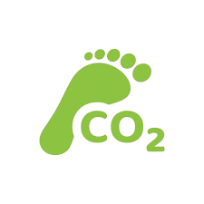

<div class="px-3 mb-2" >
  <div *ngIf="isLoading" >
    <app-loading></app-loading>
  </div>

  <div class="relative w-full overflow-hidden bg-base-200 rounded-lg shadow">

    <div
      class="flex gap-2 overflow-x-auto scroll-smooth snap-x snap-mandatory scrollbar-hide py-2"
      #scrollContainer
    >
      <div
        class="snap-center flex-shrink-0 w-full md:w-1/2 lg:w-1/6 h-30 p-1 bg-white shadow-md rounded-lg flex flex-col items-center justify-center transform transition-transform hover:scale-105 cursor-pointer"
        *ngFor="let device of devices"
        (click)="selectDevice(device.deviceId)"
        [ngClass]="{'border-2 border-blue-400': selectedDevice === device.deviceId}"
      >
        <div
          class="stat-figure"
          [ngClass]="{'bg-blue-100 rounded-full p-2': selectedDevice === device.deviceId}"
        >
          
        </div>
        <div
        class="stat-title text-center mt-2 text-sm sm:text-base"
        [ngClass]="{'text-blue-500 font-bold': selectedDevice === device.deviceId}"
      >
        {{ device.name }}
      </div>
      </div>
    </div>

    <!-- Botones de navegación -->
    <button
      (click)="scroll('left', scrollContainer)"
      class="absolute left-2 top-1/2 -translate-y-1/2 btn btn-circle btn-sm z-10"
    >
      ❮
    </button>
    <button
      (click)="scroll('right', scrollContainer)"
      class="absolute right-2 top-1/2 -translate-y-1/2 btn btn-circle btn-sm z-10"
    >
      ❯
    </button>
  </div>
</div>

<div class="container mx-auto py-1">
  <div class="grid grid-cols-2 md:grid-cols-5 gap-6 px-3">
    <app-card-real-time id="step1"
      [iconClasses]="'fas fa-clock'"
      [titleCard]="'Horario'"
      [subtitleCard]="'San Justo'"
    ></app-card-real-time>

    <app-card-real-time id="step2"
      [iconClasses]="'fas fa-cloud-rain'"
      [titleCard]="'Humedad'"
      [subtitleCard]="'Relativa'"
      [maxProgress]="100"
      [colorProgress]="'progress progress-info w-ful'"
    ></app-card-real-time>

    <app-card-real-time id="step3"
      [iconClasses]="'fas fa-thermometer-half'"
      [titleCard]="'Temperatura'"
      [subtitleCard]="'Grados Celsius'"
      [valueProgress]="10"
      [maxProgress]="100"
      [colorProgress]="'progress progress-error w-ful'"
    ></app-card-real-time>

    <app-card-real-time id="step4"
      [iconClasses]="'fas fa-dollar-sign'"
      [titleCard]="'Consumo Mensual'"
      [subtitleCard]="'Consumo $'"
      [valueProgress]="10"
      [maxProgress]="100"
      [colorProgress]="'progress progress-warning w-ful'"
    ></app-card-real-time>
    <button class="flex items-center mb-1 w-full h-full p-4 bg-green-500 transform transition-transform hover:scale-105 rounded-lg">
      <a [routerLink]="['/home/huella']" class="flex items-center w-full h-full">
        <div class="flex items-center justify-center h-10 w-10 rounded-lg bg-gray-100">
          
        </div>
        <div class="ml-3">
          <span class="text-lg font-semibold">Tu Huella de Carbono</span>
        </div>
      </a>
    </button>
  </div>
</div>

<div class="grid grid-cols-1 md:grid-cols-2 gap-6 py-6 px-3 " id="step5" *ngIf="voltUrl && ampUrl && wattUrl && kwhUrl">

  <dashboard-panel
    title= "Voltaje {{ voltage }} V"
    description="Muestra la fuerza de la electricidad que llega a tus dispositivos."
    [url]="voltUrl"
    modalDescription="El voltaje representa la fuerza con la que la electricidad se desplaza por los cables para alimentar sus dispositivos. Un nivel estable de voltaje es fundamental para proteger los equipos, ya que ayuda a evitar desperfectos o fallas. Piense en el voltaje como la presión necesaria para mantener la electricidad en movimiento de manera segura."
    tooltipText="El voltaje representa la fuerza con la que la electricidad se desplaza por los cables para alimentar sus dispositivos. Un nivel estable de voltaje es fundamental para proteger los equipos, ya que ayuda a evitar desperfectos o fallas. Piense en el voltaje como la presión necesaria para mantener la electricidad en movimiento de manera segura."
/>

  <dashboard-panel
    title="Amperaje {{current}} A"
    description="Indica cuánta electricidad está pasando por el sistema."
    [url]="ampUrl"
    modalDescription="El amperaje mide la cantidad de electricidad que fluye hacia sus dispositivos en este instante. Es similar al caudal de agua en una cañería: un mayor amperaje indica un uso más intensivo de la electricidad. Un incremento en el amperaje puede reflejar que más dispositivos están en funcionamiento o que están operando a mayor potencia."
    tooltipText="El amperaje mide la cantidad de electricidad que fluye hacia sus dispositivos en este instante. Es similar al caudal de agua en una cañería: un mayor amperaje indica un uso más intensivo de la electricidad. Un incremento en el amperaje puede reflejar que más dispositivos están en funcionamiento o que están operando a mayor potencia."
  />

  <dashboard-panel
    title="Watts {{power}} W"
    description="Muestra cuánta energía estás usando en este momento"
    [url]="wattUrl"
    modalDescription="Los watts indican la cantidad de energía que está utilizando en este momento. Es el 'combustible' que requieren sus aparatos para funcionar. A mayor cantidad de watts, mayor será el consumo de energía en tiempo real. Esta medida le permite conocer cuánta electricidad demandan sus dispositivos en el presente."
    tooltipText="Los watts indican la cantidad de energía que está utilizando en este momento. Es el 'combustible' que requieren sus aparatos para funcionar. A mayor cantidad de watts, mayor será el consumo de energía en tiempo real. Esta medida le permite conocer cuánta electricidad demandan sus dispositivos en el presente."
  />

  <dashboard-panel
    title="{{energy}} kWh"
    description="Indica la cantidad de electricidad que has usado en este instante"
    [url]="kwhUrl"
    modalDescription="El kilovatio-hora (kWh) es una unidad de medida que refleja el consumo acumulado de electricidad durante un período determinado. Es similar a los kilómetros recorridos por un vehículo: cuanto mayor sea el número de kWh, más energía ha consumido en total. Esta métrica resulta útil para tener un panorama general de su consumo y anticipar el costo de su factura mensual."
    tooltipText="El kilovatio-hora (kWh) es una unidad de medida que refleja el consumo acumulado de electricidad durante un período determinado. Es similar a los kilómetros recorridos por un vehículo: cuanto mayor sea el número de kWh, más energía ha consumido en total. Esta métrica resulta útil para tener un panorama general de su consumo y anticipar el costo de su factura mensual."
  />

</div>
